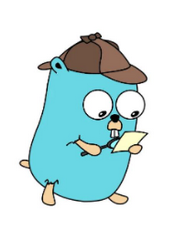
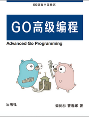
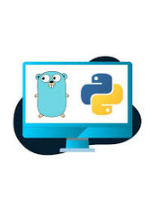
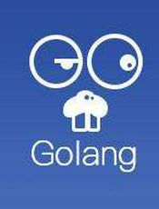
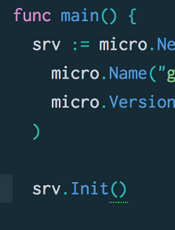
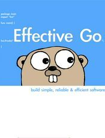
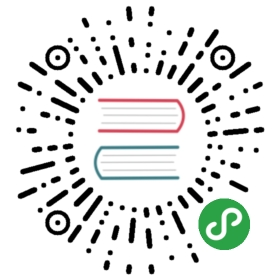

分类
发现
标签
搜索
开源
APP下载
注册
登录
分类
发现
榜单
收录
开源
站长
壹资讯
APP
注册
登录
Go Web 编程
语言：
中文
评分：
4.0
(
0个有效评分
)
最后更新：
国际化站点
- 2020-02-06 13:12:32
来源：
谢孟军
|
支持原作者
|
整理：
进击的皇虫
go
web
编程
golang
《Go Web编程》介绍如何用Go语言进行Web应用的开发，将Go语言的特性与Web开发实战组合到一起，帮读者成功地构建跨平台的应用程序，节省Go语言开发Web的宝贵时间。有了这些针对真实问题的解决方案放在手边，大多数编程难题都会迎刃而解。在《Go Web编程》中，读者可以更加方便地找到各种编程问题的解决方案，内容涵盖文本处理、表单处理、Session管理、数据库交互、加/解密、国际化和标准化，以及程序的部署维护等运维方面的知识，最后还介绍了一个快速开发的框架帮助您迅速进入Go语言的Web开发。
97
章节
133103
阅读
595
收藏
码上学习
加入收藏
小程序
书栈公众号：
刻舟求荐
《Go Web编程》介绍如何用Go语言进行Web应用的开发，将Go语言的特性与Web开发实战组合到一起，帮读者成功地构建跨平台的应用程序，节省Go语言开发Web的宝贵时间。有了这些针对真实问题的解决方案放在手边，大多数编程难题都会迎刃而解。在《Go Web编程》中，读者可以更加方便地找到各种编程问题的解决方案，内容涵盖文本处理、表单处理、Session管理、数据库交互、加/解密、国际化和标准化，以及程序的部署维护等运维方面的知识，最后还介绍了一个快速开发的框架帮助您迅速进入Go语言的Web开发。
97
章节
133103
阅读
595
收藏
码上学习
加入收藏
小程序
书籍目录
书籍评论 (
0
)
阅前必读
Go环境配置
Go语言基础
Web基础
表单
访问数据库
session和数据存储
文本文件处理
Web服务
安全与加密
国际化和本地化
错误处理，调试和测试
部署与维护
如何设计一个Web框架
扩展Web框架
参考资料
相关书籍
GO专家编程
build web application with golang
Go Web Examples

Golang 编程基础学习笔记

Go语言高级编程
Go语言(Golang)编码规范

Python/Golang Web 入坑指南

Building Web Apps with Go（英文）

Microservices in Golang

Effective Go (实效 GO 编程) 中英双语版
[试读] Go 语言编程之旅
Go Web 示例中文翻译
×
分享，让知识传承更久远
×
文档下载
普通下载
下载码下载(免登录无限下载)
你与大神的距离，只差一个APP
请下载您需要的格式的文档，随时随地，享受汲取知识的乐趣！
PDF
文档
EPUB
文档
MOBI
文档
温馨提示
每天每在网站阅读学习一分钟时长可下载一本电子书，每天连续签到可增加阅读时长
下载码方式下载：免费、免登录、无限制。
免费获取下载码
下载码
文档格式
PDF
EPUB
MOBI
码上下载
×
微信小程序阅读

微信扫一扫，知识掌上学